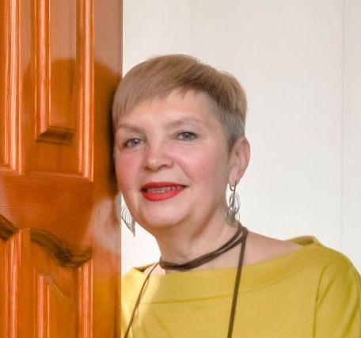
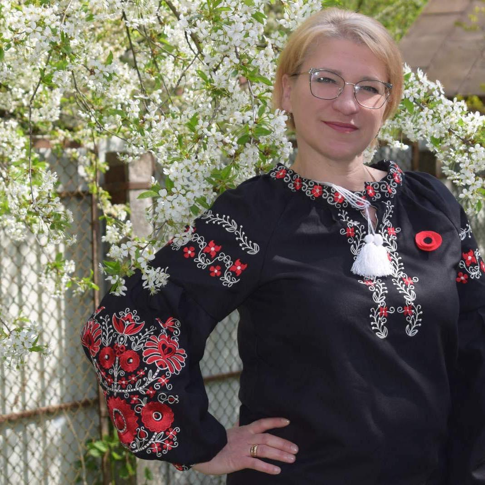
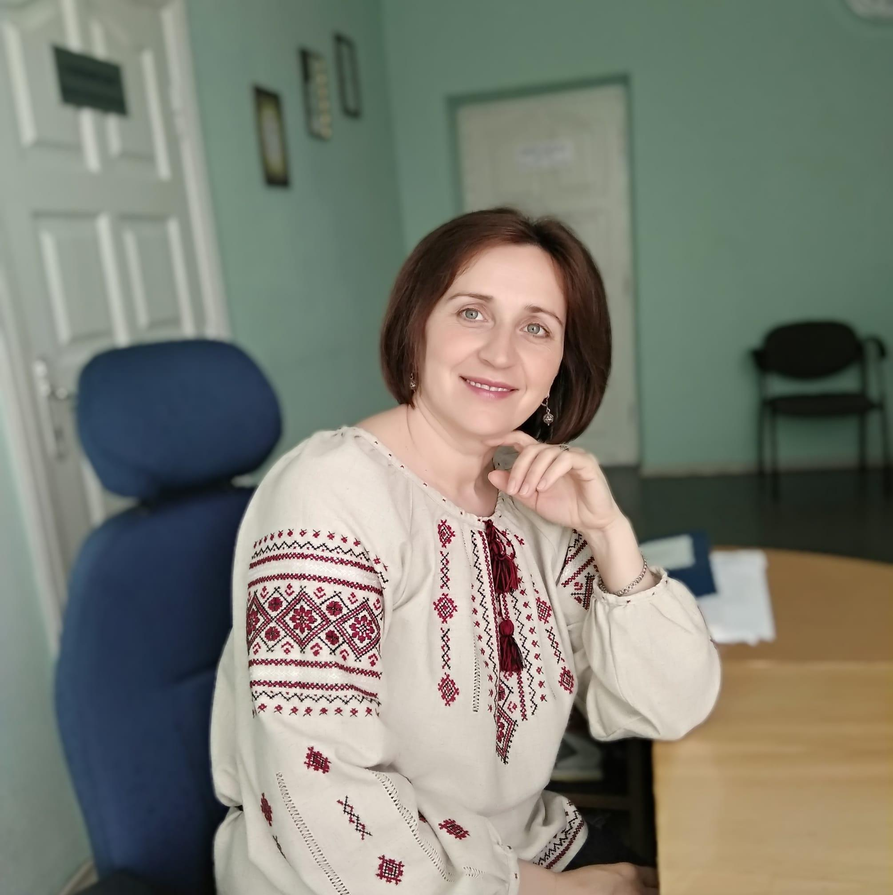
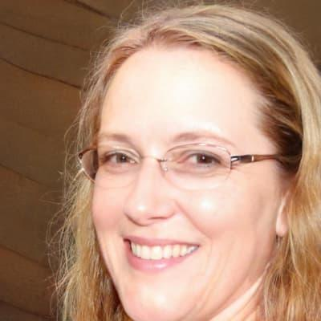
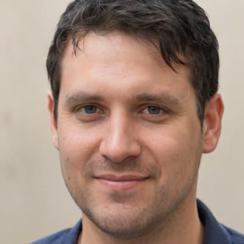
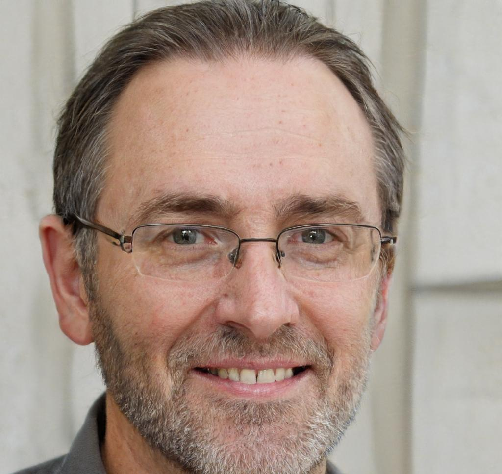

Марія Кузьмич
Юрій Володимирович - найкращий хірург і лікар, яких я тільки зустрічала в своєму житті. Це не
просто гарні слова. Юрій
Володимирович двічі витягував мене з того світу.

Таня Чорнобай
Дуже хороший! Приємний,завжди уважний! Мені неодноразово допоміг!
Василь Кузнєцов
Я хочу подякувати лікарю Юрію, який врятував моє життя, видаливши ракову пухлину з моєї
підшлункової залози. Він був
дуже професійним, уважним і доброзичливим до мене. Він пояснив мені все про операцію, ризики
і наслідки. Він також дав
мені поради, як доглядати за собою після операції і як запобігати повторенню захворювання. Я
дуже вдячний йому за його
чудову роботу і людяність.

Валентина Сабанюк
Чудовий лікар, фахівець і людина

Ірина Бойчук
Я не можу висловити свою вдячність лікарю Юрію, який виконав диво і вилікував мене від раку
шийки матки. Він був дуже
добрий і співчутливий до мене. Він детально розповів мені про мою хворобу, операцію і її
наслідки. Він також підтримував
мене психологічно і давав мені надію на одужання. Він зробив все можливе, щоб зменшити мою
біль і дискомфорт після
операції. Він показав мені свою любов до своєї професії і своїх пацієнтів. Я назавжди
залишуся йому вдячною за те, що
він подарував мені шанс на нове життя. Він - справжній герой для мене.

Іван Дейнега
Я дуже радий, що я опинився в руках такого кваліфікованого і досвідченого лікаря хірурга,
який зміг успішно видалити
ракову пухлину з моєї печінки. Він був дуже чуйним і турботливим до мене. Він ретельно
перевірив моє стан перед
операцією і підготував мене до неї. Він також розповів мені все про процес операції, можливі
ускладнення і рекомендації
по реабілітації. Він показав мені свою високу професійну етику і глибоке знання своєї
справи. Я високо ціную його роботу
і вдячний йому за те, що він подарував мені друге життя. Юрій - найкращий лікар, якого я
коли-небудь зустрічав.

Олександр Сирота
За професіоналізм у своїй справі, терпіння та увагу, велика подяка лікарю онкологу Чишкевичу
Юрію Володимировичу. Нехай
Бог допомагає вам у надскладній роботі, що з дня у день ви робите. Ще раз дякуємо вам та
всьому персоналу відділення! З
повагою родина Орловських.